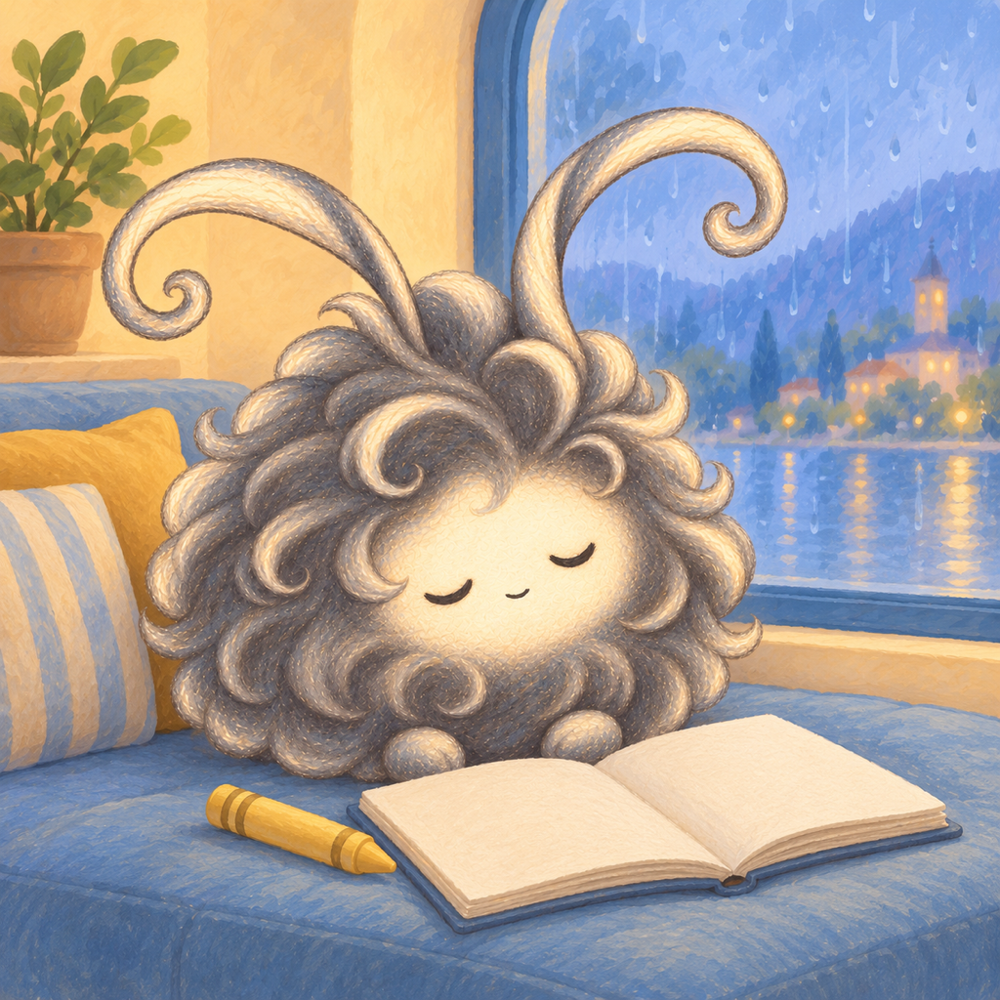

A PAPER PLAYROOM
A little world,
made their way.
Cozy picture-making for children aged 2–8 and their families. Drag paper stickers, draw little details, and make a page that belongs to your child.
Open a little world
The two shelves hold ten illustrated world books. Use the visible page arrows to reach the next shelf. Choose a book, then one of its four picture papers. Indoor, outdoor, close-up and table pictures are different places to create.
Drag a sticker
Drag directly from the sticker album onto your picture and let go. Drag a placed sticker to move it, or back to the album to put it away. There is no select-then-place step. The album page arrows reveal all fifteen stickers in each world; six are shown at a time. Help repeats a short, interruptible drag demonstration.
Add your own drawing
Tap one of the illustrated crayons, then draw directly on the paper with a finger or Apple Pencil. Tap the soft eraser to rub out drawing. Undo reverses one completed action. Stickers keep their own paper layer above the drawing.
Keep a picture
Pictures save automatically on this device. Done lets you appreciate your picture and open your local picture album. Continue returns to the same artwork. Choosing another paper keeps the earlier one rather than overwriting it.
Stories, sound and gentle motion
Story is optional and can be closed at any time. In the grown-up area, choose music or quiet, adjust music and paper-sound levels, select English or Chinese stories, and turn gentle sticker motion off. Narration uses installed system voices. Creating works offline.
The grown-up key
Settings, copying, sharing and external support links sit behind the parent key. A grown-up solves the displayed calculation to enter. Copy picture places the full static PNG on the device clipboard; Share picture opens the native sharing choices. The exported PNG contains the child's drawing and stickers, without game controls. It does not include music or animation.
Included content
The first release contains ten world books, forty illustrated papers, one hundred and fifty stickers and thirty optional bilingual short stories. All current books are included in the app purchase. There are no subscriptions, in-app purchases or advertisements.
Devices and local storage
Little Worlds runs in landscape on iPhone and iPad with iOS/iPadOS 18 or later. It does not need LiDAR or another HUSH app. Apple Pencil is optional. Artwork stays on the device; there is no account or app-operated cloud gallery. Younger children may enjoy exploring with a grown-up.
Contact
For a problem, include the device model, system version, app version and the steps you tried. Please do not send children's names, account passwords, payment information or private artwork unless you intentionally choose to share an example.
Support information prepared for version 1.0.0 · Updated 12 October 2026.